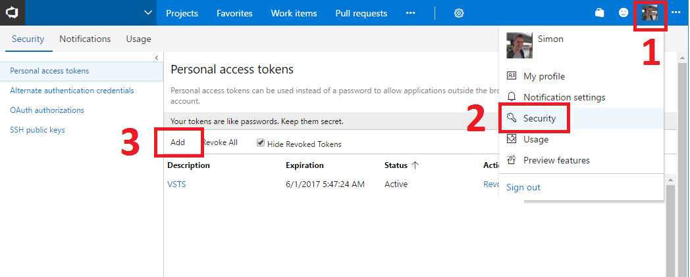

Pull requests
Failed to retrieve
{{todo.title}}
{{todo.description}}
Copy
Copy title
Copy description
Backlog items assigned to me
Failed to retrieve
Feature
Epic
Task
Bug
{{todo.title}}
Copy
Only work items with status changes
Settings
Token Set!
Re-Enter VSO personal access token
VSTS Personal Access Token
Create a personal access token for this app from the
VSTS Security section 
Account
{{account}}
Project
{{project}}
{{settingsText}}
Refresh